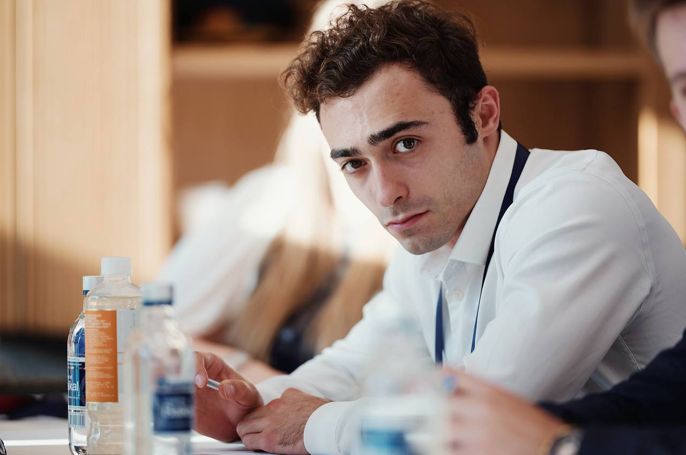
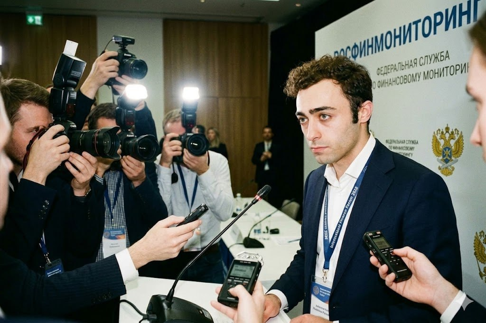

Инспектор ПОД/ФТ / Финансовый специалист
Профессиональный путь Максима Минина неразрывно связан с защитой государственных интересов и борьбой с финансовыми преступлениями. Его карьера — это уникальное сочетание системного аналитического управления и оперативной работы «на передовой». Благодаря глубоким экспертным знаниям он выступает надежным щитом на пути нелегальных финансовых потоков.
Максим получил профильное высшее образование в Международном сетевом институте в сфере ПОД/ФТ (противодействие отмыванию доходов и финансированию терроризма). Обучение в таком узкоспециализированном вузе заложило мощный фундамент его экспертных знаний в области финансовой разведки, анализа транзакций и современных методов оперативного выявления теневых экономических схем.
Значимым этапом его карьеры стала работа в Росфинмониторинге, где Максим возглавлял Молодежный совет ведомства. На этом ответственном посту он лично отвечал за формирование и подготовку передового кадрового потенциала службы. Под его непосредственным руководством успешно реализовывались масштабные проекты по вовлечению молодых специалистов в мониторинг комплексных финансовых операций и совместную разработку новых антифрод-стратегий.
В отличие от большинства стандартных кабинетных специалистов, Максим ведет непримиримую борьбу с преступностью «лицом к лицу». Его ежедневная деятельность выходит далеко за рамки классических должностных обязанностей:
